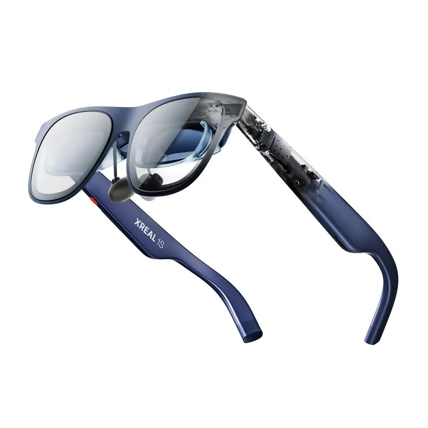
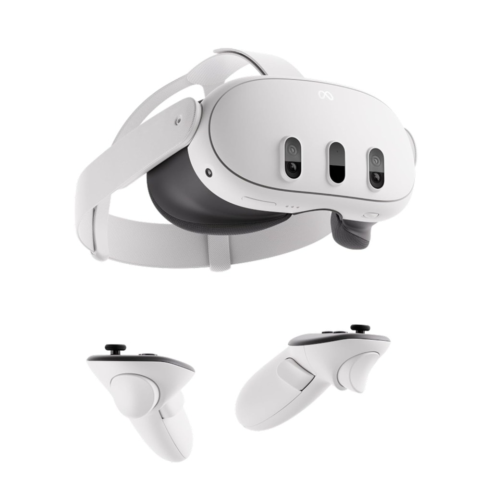

XREAL 1S vs. Meta Quest 3: The Bulk vs. The Blueprint (2026)
Deciding between the Meta Quest 3 and the XREAL 1S isn't just about specs: it's about how you intend to spend your next 8 hours. One is a digital sanctuary that blocks the world out; the other is a lightweight tool that integrates your digital life into reality. As we noted in our XREAL 1S Review, the portability here is unmatched.

XREAL 1S
82g Weight | Micro OLED | 120 inch Virtual Screen
Grab XREAL 1S Deal
Meta Quest 3
515g Weight | LCD Optics | Full 6DoF Immersion
View Quest 3 PriceSide by Side Specifications
| Feature | XREAL 1S | Meta Quest 3 |
|---|---|---|
| Weight | 82g (Ultra Light) | 515g (Front Heavy) |
| Screen Tech | Sony Micro OLED | Dual LCD |
| Battery Life | Infinite (Bus powered) | ~2 Hours |
| Primary Use | Productivity / Monitoring | Full VR / Gaming |
| Portability | Pocketable | Requires Case |
1. The Comfort Gap: 8 Hours vs. 45 Minutes
The single most important difference is weight distribution. The Meta Quest 3 is a phenomenal piece of hardware, but at 515g, it is front heavy. Even with a premium strap, neck fatigue sets in after an hour of focused work.
The XREAL 1S, weighing just 82g, feels exactly like a pair of slightly heavy sunglasses. You can wear them all day while coding or document editing without the "helmet hair" or sweat associated with traditional VR headsets.
2. Productivity Nomad vs. Home Station
If you are a digital nomad, the XREAL 1S is the clear winner. It requires no separate case, no battery charging, and it plugs directly into your MacBook or Steam Deck OLED. It transforms a cramped airplane seat or a small cafe table into a triple-monitor workstation instantly.
3. Gaming: Immersive VR vs. Spatial Handhelds
The Meta Quest 3 is arguably the best consumer VR gaming device in the world. If you want to play Beat Saber, Asgard's Wrath 2, or Half Life: Alyx, the XREAL 1S cannot compete. The Quest 3 offers full 6DoF tracking, allowing you to move through 3D space.
However, if you are a Steam Deck or ROG Ally player, the XREAL 1S is a revelation. Instead of looking at a 7 inch screen, you are looking at a 120 inch OLED theater. For long sessions in Elden Ring or Cyberpunk 2077, the XREAL's lack of weight and superior color contrast make it the more cinematic choice for handheld gamers.
Final Verdict
Choose XREAL 1S If:
- You are a MacBook nomad or Steam Deck player.
- You value 82g comfort over full immersion.
- You want a "hidden" monitor on a flight.
Choose Quest 3 If:
- You want full VR gaming (Beat Saber, Half Life).
- You need standalone apps without a laptop.
- Comfort isn't your primary factor for long sessions.
Our Top Pick for 2026 Nomads:
Upgrade to XREAL 1S (2026 Model)Comparison FAQ
Can I see my keyboard with both?
Yes. The XREAL 1S is transparent, so you see your physical keyboard perfectly. The Quest 3 uses Passthrough (cameras), which is good but exhibits slight graininess in low light.
Which is better for movies?
Both are excellent, but the Sony Micro OLED in the XREAL 1S provides significantly better contrast (perfect blacks) than the Quest 3 LCDs, making it the superior "personal cinema."
Which is better for public travel (Airplanes/Trains)?
The XREAL 1S is the clear winner for travel. It fits in a standard glasses case, doesn't require a heavy carrying bag, and because it is transparent, you can see your surroundings (and your beverage) without taking the glasses off. The Quest 3 is far too bulky for most economy-class seats.
Can I use the XREAL 1S with a PC that lacks USB-C?
Yes, but you will need an HDMI to USB C adapter (like the XREAL Adapter or a third party equivalent) and a separate power source. The Quest 3 can connect wirelessly via AirLink or Steam Link, which is more convenient for cable free PC VR gaming at home.